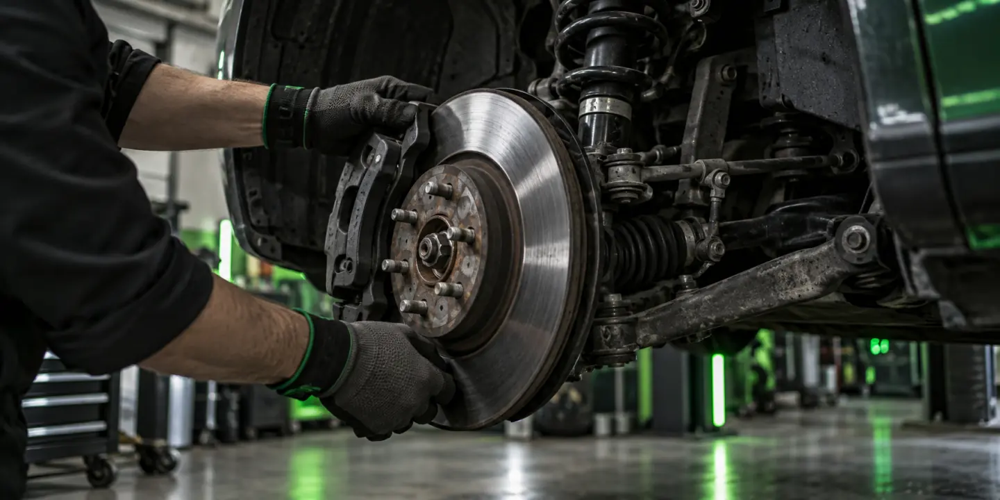
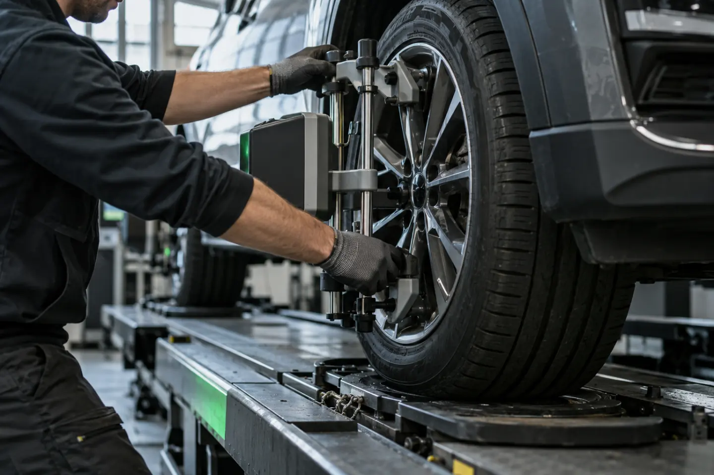
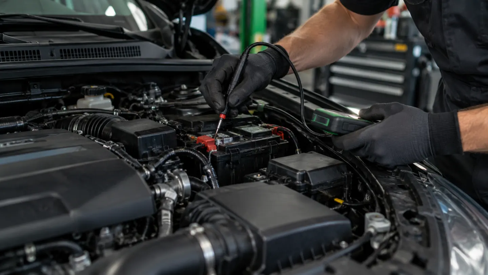
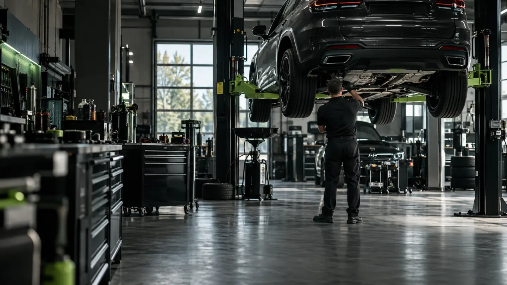

01 / Estabilidade
Suspensão
O que é Conjunto que ajuda a manter contato, estabilidade e conforto ao rodar.
Quando avaliar Ao perceber ruídos, impactos mais secos ou mudança na estabilidade.
Cuidado e atenção a cada detalhe do seu carro.
Explore nossos serviçosEntenda o que cada serviço avalia e quando vale procurar uma inspeção. A necessidade de reparo é definida após a avaliação do veículo.

O que é Conjunto que ajuda a manter contato, estabilidade e conforto ao rodar.
Quando avaliar Ao perceber ruídos, impactos mais secos ou mudança na estabilidade.

O que é Ajuste dos ângulos das rodas conforme as especificações do veículo.
Quando avaliar Após impactos, desgaste irregular dos pneus ou mudança na direção.
O que é Correção da distribuição de massa no conjunto roda e pneu.
Quando avaliar Ao sentir vibração em certas velocidades ou após trocar pneus.
O que é Inspeção dos componentes responsáveis por reduzir a velocidade e parar o carro.
Quando avaliar Diante de ruídos, vibração ou alteração na resposta do pedal.

O que é Avaliação de alimentação, partida, iluminação e outros circuitos elétricos.
Quando avaliar Quando luzes de aviso, partida ou componentes elétricos exigirem atenção.
Imagens ilustrativas criadas para esta página. A avaliação presencial confirma a condição do veículo.
Uma sequência simples para organizar a conversa, a avaliação e a entrega do serviço.

Começamos pelo que você percebeu no carro e pelo contexto em que isso acontece.
Avaliamos o veículo para identificar a causa antes de indicar qualquer serviço.
Explicamos o trabalho proposto e seguimos com a solução combinada.
Revisamos o resultado e orientamos você na entrega do carro.
Equipamentos, pessoas e atendimento fazem parte da mesma experiência. As imagens representam esse universo e poderão ser substituídas por registros da unidade.
Equipamentos Ferramentas e medições entram conforme a avaliação de cada veículo.
Equipe A conversa com quem atende ajuda a descrever o que o carro apresenta.
Atendimento O próximo passo é explicado antes da execução do serviço.
Boas experiências merecem ser contadas por quem viveu cada uma delas.
Depoimentos e casos serão publicados aqui com autorização dos clientes.
Acompanhe a Novaes no InstagramAlguns sinais merecem atenção, mas somente uma avaliação do carro pode definir o serviço necessário.
Depois de impactos fortes, ao notar desgaste irregular dos pneus ou mudança na direção. Uma avaliação confirma se há necessidade de ajuste.
Vibrações podem ter diferentes causas. Vale procurar uma inspeção para identificar a origem antes de escolher o serviço.
Procure uma avaliação técnica o quanto antes. Ruídos, vibração ou mudança no pedal exigem atenção.
Entre em contato pelo WhatsApp ou telefone, descreva o que percebeu e confirme a disponibilidade com a equipe.
Conte o que acontece com seu carro. A equipe confirma o atendimento e orienta os próximos passos.
Falar pelo WhatsAppSegunda a sexta · 08h às 18h
Sábado · 08h às 14h